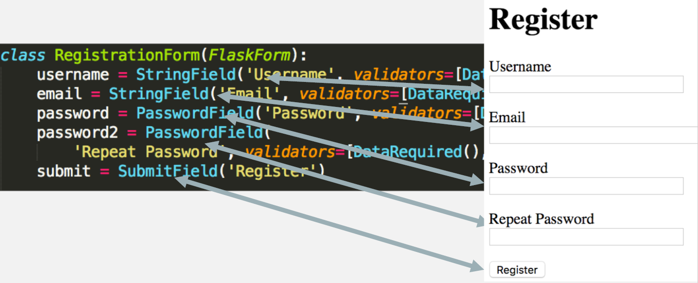
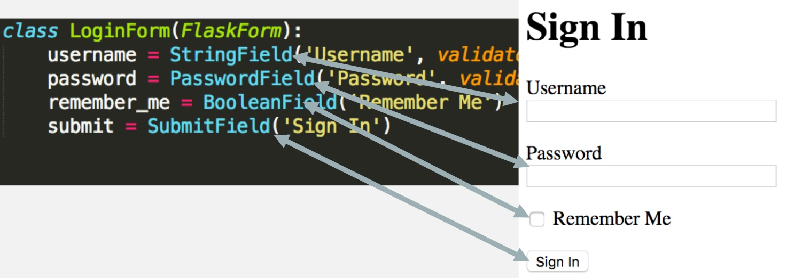
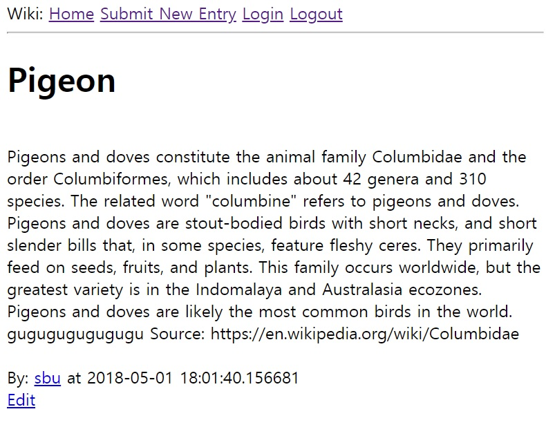
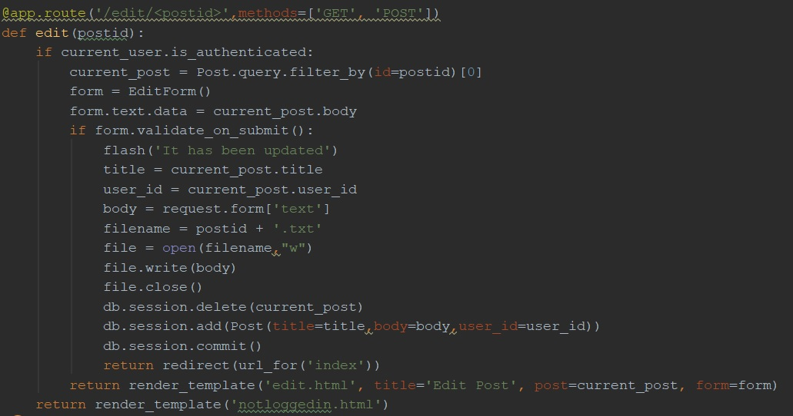

About Me
현재 Stony Brook University (뉴욕주립대)에 4학년으로 재학중인 Information Systems (정보시스템학과) 전공 학생입니다.
백엔드 웹 기술에 관심을 가지고 있습니다. 졸업예정 시기는 2018.12 입니다.
Personal Info
- Name: 모혜성 (Hyeseong Mo)
- Date of Birth: 1994년 9월 14일
- Address: 광주광역시 광산구 소촌동
- Phone: 010-6726-0914
- Email: hyeseong0914@hotmail.com
Java 언어로 처음 프로그래밍 언어 공부를 시작하여 기본적인 프로그래밍 지식, 데이터 구조와 알고리즘을 배웠습니다.
그리고 Python을 배워 학교의 조교로 활동하면서 코딩을 학생들에게 가르쳐 주기도 했습니다.
Perl과 Linux 그리고 Python(깊게)을 배우는 scripting languages과 데이터베이스 수업을 들었고
C, C++, JavaScript등 저의 전공에서는 수업을 하지 않는 언어들은 방학때 독학하며 기본 지식을 습득했습니다.
Language
- Java
- Python
- Ms-Sql
- MySql
- Perl
- Linux
- HTML/CSS
Wiki
소개
심플한 wiki program 으로 회원가입을 통해 로그인을 한 사용자가
content를 만들고 편집 할수 있도록 하는 웹사이트입니다. Python의 Flask를 사용해서 코딩 하였습니다.
어플리케이션 구조
- app/: 어플리케이션 파일
- app/forms.py: Submission 형식
- app/models.py: 모델 파일 (Data and data logic)
- app/routes.py: 루트 데코레이터 (To bind a function to a URL
- app/__init__.py: Initialize everything
- app/templates: HTML 파일
- config.py
- wiki.py: Flask 어플리케이션 스타터



아직 Front-end를 세련되고 이쁘게 하는 HTML, CSS 코드를 작성하지 않았습니다. 빠른 시일 내에 업데이트할 예정입니다.
가장 첫번째의 사진부터 보면 회원가입 페이지이며 사용자의 아이디, 이메일, 비밀번호, 그리고 재확인 비밀번호를 순서로 되어있습니다.
가운데 사진은 로그인 페이지이며 회원가입을 한 사용자만 로그인이 가능하도록 코딩 하였고 마지막 사진은 사용자가 등록 할수 있는
페이지의 제목과 그 내용입니다. 사진에서는 Pigeon을 제목으로 비둘기에 대한 정보를 내용으로 등록되어 있는 자료입니다.
소스 코드 일부

위의 소스 코드는 편집을 구현한 부분입니다. 사용자가 등록한 페이지의 내용을 아무 사용자가 편집 할수 있도록 구현하였습니다.
편집 하고자 하는 포스트의 아이디로 제목과 내용을 데이터베이스로 부터 불러와 내용을 바꾼 후 바꾸기 전의 포스터를
데이터베이스에서 삭제하고 편집한 포스트를 다시 새롭게 추가 하도록 하였습니다.